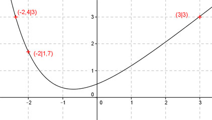
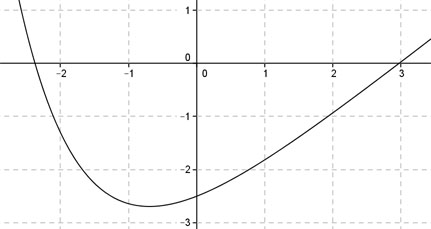

Aufgabe 122 Ergänzen Sie die Wertetabelle für den Graphen: y = x + 0,5e-x x -2 -2,4 oder 3 y 1,7 3 y = f(-2) = - 2 + 0,5 * e-(-2) = - 2 + 0,5 * e2 y = -2 + 3,7 = 1,7 gerundet  An welchen Stellen x die Funktion den Wert 3 annimmt, ist elementar nicht zu ermitteln. Abgelesen: Es sind 2 Stellen. Zur Berechnung wendet man ein Näherungs- verfahren an, hier die Regula falsi. x0 = gesuchte Nullstelle x1 * |y(x2)| + x2 * |y(x1)| x0 = ------------------------------ |y(x1)| + |y(x2)| fx = 3 eingesetzt: 3 = 2 * x + 0,5 * e-x | -3 2 * x + 0,5 * e-x - 3 = 0 Als Funktion: y = 2 * x + 0,5 * e-x - 3 Die Nullstellen dieser Funktion (y = 0) entsprechen den gesuchten Werten für x.  Abgelesen: Nullstellen zwischen -2,6 und -2,2 und zwischen 2,5 und 3,5. Nullstelle x0 zwischen -2,6 und -2,2 mit Excel ermittelt: A B C D E F G H I J -2,6 -2,2 0,6885 1,1301 -1,7902 -2,4861 -4,2763 1,8186 -2,3514 -0,1024 -2,6 -2,3514 0,1024 1,1301 -0,2662 -2,6573 -2,9234 1,2324 -2,3721 -0,0135 -2,6 -2,3721 0,0135 1,1301 -0,0352 -2,6806 -2,7158 1,1436 -2,3748 -0,0018 -2,6 -2,3748 0,0018 1,1301 -0,0046 -2,6836 -2,6882 1,1318 -2,3751 -0,0002 -2,6 -2,3751 0,0002 1,1301 -0,0006 -2,6840 -2,6846 1,1303 -2,3752 0,0000 Die gesuchte Nullstelle ergibt sich nach mehreren Näherungen mit ausreichender Genauigkeit zu x01 = -2,4 gerundet. Weitere Erläuterungen zur Tabelle siehe Aufgabe 101. Die Nullstelle zwischen 2,5 und 3,5 ergibt sich nach dem selben Verfahren zu x02 = 3 gerundet.